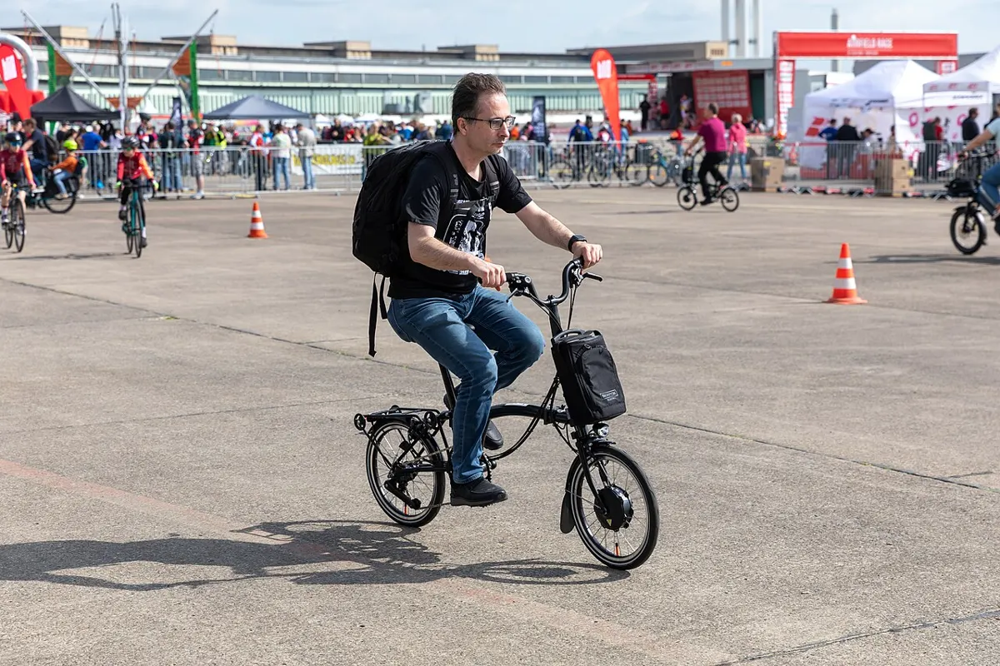

Тип велосипеда
Складной велосипед
Folding bike
Велосипед, который складывается для перевозки в транспорте и хранения.
Самый известный — британский Brompton (разработан Эндрю Ритчи в 1970-х), колёса 16" (ETRTO 349). Также популярны складные на колёсах 20" (Dahon, Tern и др.). Многие складные оснащают планетарными втулками или специальными короткими переключателями.
Отличительные черты
- Колёса 16–20"
- Шарниры рамы и руля
- Компактный вес
Уход
Шарниры складывания держите чистыми и проверяйте затяжку замков; покрышки и камеры нестандартных размеров возите с собой.
